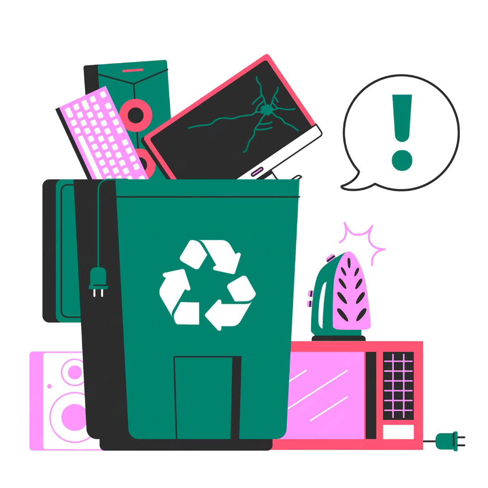
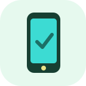
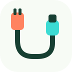
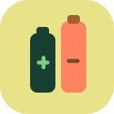

de toneladas de resíduos eletrônicos geradas no ano.
Fonte: UIT / Global E-waste Monitor 2024 ↗✳ TECNOLOGIA TAMBÉM TEM DESTINO
Seu eletrônico parou.
O cuidado continua.
Celulares, pilhas e computadores antigos não devem virar um problema para a natureza. Descubra o que fazer com eles — com informação simples e sem complicação.
Gratuito Sem cadastro Feito para celular

Pequenas escolhas,
novos caminhos.
novos caminhos.
01 / RECONHEÇASaiba o que é resíduo eletrônico
02 / PREPAREEntenda os cuidados necessários
03 / DESTINEConsulte pontos de recebimento
01 / POR QUE ISSO IMPORTA?
A tecnologia evolui.
O impacto permanece.
Lixo eletrônico é o conjunto de equipamentos elétricos e eletrônicos sem uso ou no fim da vida útil. Alguns componentes exigem cuidado especial no descarte para evitar riscos ambientais e à saúde.
do lixo eletrônico mundial teve coleta e reciclagem formalmente documentadas.
Fonte: UIT / Global E-waste Monitor 2024 ↗Não é só uma questão de lixo.
O descarte inadequado pode liberar substâncias perigosas. A exposição é especialmente preocupante em contextos de reciclagem informal.
Saiba mais na OMS ↗Os números são globais, referentes a 2022; não representam medições feitas no colégio ou em Curitiba.
♻
✳
SAÚDE + MEIO AMBIENTE
O destino errado pode prejudicar muita gente.
Quando equipamentos são queimados, desmontados sem proteção ou destinados a locais inadequados, algumas substâncias podem contaminar solo, água e ar. A reciclagem deve ser feita por operadores preparados, e não por estudantes em casa.
SoloÁguaSaúdeRecursos naturais
02 / O QUE É LIXO ELETRÔNICO?
Está na gaveta?
Pode estar nesta lista.
Objetos do dia a dia que merecem uma destinação responsável, mesmo quando são pequenos.

Celulares e tablets
Aparelhos antigos, quebrados ou que não são mais usados.
Computadores
Notebooks, monitores, teclados, impressoras e periféricos.

Cabos e carregadores
Fios, fontes de alimentação e adaptadores sem utilização.

Pilhas e baterias
Itens portáteis usados que exigem atenção específica.
Nem todo resíduo vai ao mesmo lugar. Lâmpadas, medicamentos e alguns tipos de bateria seguem regras próprias. Confira sempre o que o ponto de recebimento aceita.
03 / GUIA INTERATIVO
O que eu faço
com este eletrônico?
Escolha o tipo de material e veja orientações antes de procurar um ponto de recebimento. O guia funciona sem cadastro.
1
Escolha o material
2
Qual é a situação?
Antes de sair:
O recebimento depende do tipo de item e do local. Verifique as orientações do serviço escolhido.
3 / SEU PLANO DE DESCARTE
Celular ou tablet
Confira os cuidados antes de entregar o aparelho.
O que não fazer
✕ Jogar no lixo comum sem conferir as regras locais
✕ Queimar, quebrar ou desmontar para retirar peças
✕ Perfurar, apertar ou aquecer baterias
04 / CURITIBA E REGIÃO
Onde levar?
Comece por fontes oficiais.
Os pontos de recebimento e os materiais aceitos podem mudar. Em vez de exibir endereços possivelmente desatualizados, este site direciona você aos canais responsáveis pelas informações.
01 ↗
SERVIÇOS MUNICIPAIS
Prefeitura de Curitiba
Consulte orientações locais sobre resíduos eletroeletrônicos, Ecopontos e alternativas de coleta na cidade.
Consultar orientações ↗02 ↗
ELETROELETRÔNICOS
ABREE
Pesquise pontos de recebimento selecionando seu CEP e o equipamento que deseja descartar.
Buscar pontos pelo CEP ↗03 ↗
PILHAS E BATERIAS
Green Eletron
Veja as opções oficiais para descarte de pilhas e baterias portáteis e confira as condições de entrega.
Encontrar locais de entrega ↗05 / PEQUENAS AÇÕES
Seu desafio
começa agora.
Marque as atitudes que você já colocou em prática ou planeja adotar. É uma lista pessoal, salva somente neste navegador.
Não é uma medição do impacto ambiental da escola.
Minha lista de atitudes0 de 4
06 / APRENDA NA PRÁTICA
Você sabe dar
o destino certo?
Responda a 8 perguntas sobre resíduos eletrônicos, saúde e descarte. Ao final, veja o resultado e salve um comprovante simples, sem informar seu nome.
Sem login ou envio de respostas
Feedback com explicação
Carregando pergunta...
DESAFIO CONCLUÍDO
Você concluiu!
0/8 O arquivo é gerado no seu dispositivo. Não contém nome ou dados pessoais.DÚVIDAS FREQUENTES
Vale a pena
perguntar.
O celular antigo pode ser doado?
Se estiver funcionando, a reutilização pode prolongar a vida útil. Antes de doar, remova cartões de memória e contas e apague dados pessoais seguindo as instruções do fabricante.
Posso colocar pilhas na lixeira de recicláveis?
Não é recomendado. Pilhas e baterias portáteis possuem sistemas específicos de logística reversa. Confira pontos de entrega no site da Green Eletron ou nas orientações municipais.
Posso desmontar o equipamento para reciclar peças?
Não faça desmontagem por conta própria. Ela pode causar cortes, choques ou exposição a materiais perigosos. Encaminhe os itens a um serviço apropriado.
O site recebe eletrônicos ou agenda coleta?
Não. Este site é somente educativo. A coleta e os horários devem ser confirmados diretamente com a Prefeitura, ABREE ou Green Eletron.
07 / CONTINUE APRENDENDO
Informação boa
tem fonte.
Dados e orientações consultados em fontes institucionais. As informações das instituições podem ser atualizadas com o tempo.
01
UIT / UNITAR — Global E-waste Monitor 2024Estatísticas globais de geração,
coleta e reciclagem documentadas (ano-base 2022)
02
OMS — relatório em portuguêsAs crianças e as lixeiras digitais: exposição ao
lixo eletrónico e saúde infantil
03
Prefeitura de CuritibaServiço municipal: lixo eletroeletrônico, descarte e
alternativas locais
04
ABREELogística reversa e busca de locais de recebimento por CEP e tipo de
equipamento
05
Green EletronInformações e locais de descarte de eletrônicos, pilhas e baterias
portáteis
06
Nações Unidas — Agenda 2030ODS 3, meta 3.9: saúde e prevenção de riscos ligados
à poluição ambiental